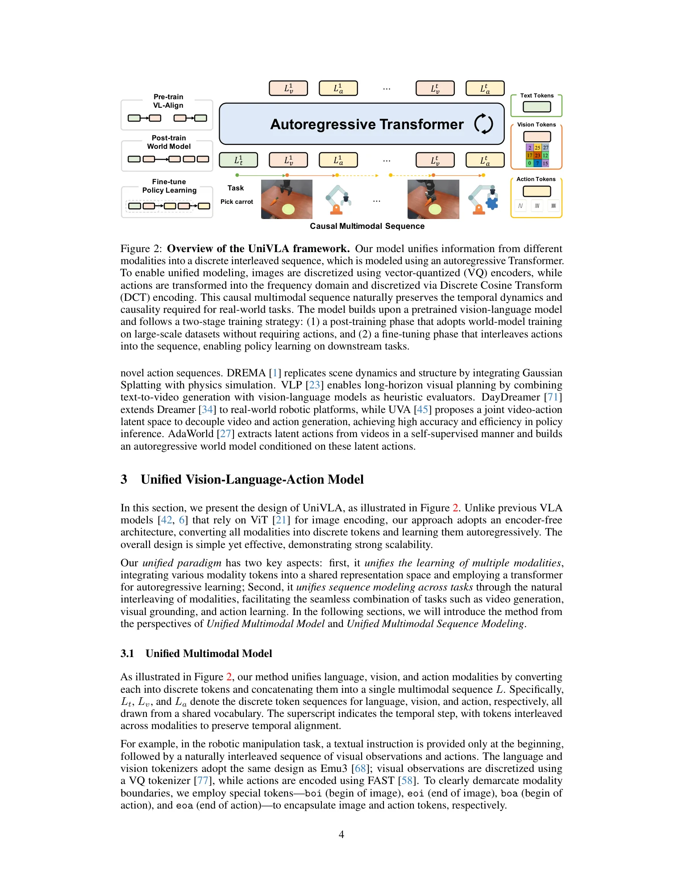
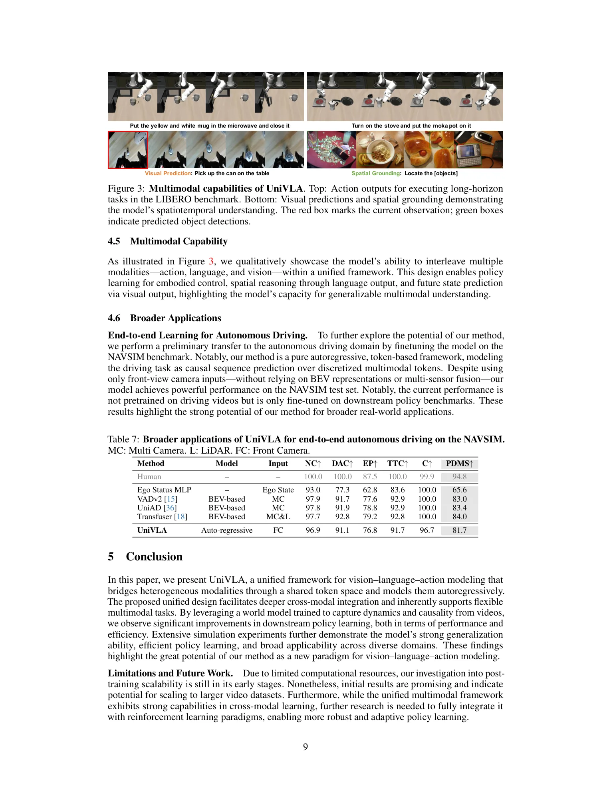

💡速记层 · 思想 / 逻辑 / 方法
默认读完就走的一层——只讲思想、逻辑、方法；效果只作验证。要核对原文/钻细节再看下面的「深读层」。
- 主流 VLA（RT-2、OpenVLA、π0）让 ViT 编码图像再接语言模型——这种晚期融合限制了跨模态深度耦合，且无法利用视频里的时序与因果依赖。
- 真正的统一：把图像用 VQ tokenizer 离散化，把动作用 FAST（DCT）离散化，与语言共享词表 → 一切都是 token，next-token prediction 统一一切。
- 但光有架构还不够：动作数据稀缺，视频数据海量。中间插一个世界模型后训练——只用视频（无需动作标注）、以视觉 token 为监督，学环境动态
P(s_{t+1}|s_t, instruction)。 - 世界模型学到的时序因果表征可大幅迁移到下游策略微调：用 10% 数据即可超过全数据 GR-1；2k 步收敛即超过 8k 步无后训练基线。
- 同一框架自然支持多模态输出——spatial grounding（文本）、video prediction（视觉）、action（动作）都是 next-token prediction 的不同 loss mask。
{lang, obs_t, action_t, obs_{t+1}, action_{t+1}, ...} 交错序列微调，action chunk 大小 10（CALVIN/LIBERO）/ 5（SimplerEnv）；引入 1 帧历史观测窗口效果最优（CALVIN 4.26→4.61）；同时保留视觉预测 loss（权重 0.5）可再涨约 0.2 avg。三项仿真基准全部刷新 SOTA；世界模型消融证明时序因果理解是性能跃升的核心——这反过来支持"统一 token 序列 + 世界模型预训练"的思想。
想看具体数字（点开）
- LIBERO 平均：95.5%（π0-FAST 85.5%，CoT-VLA 81.1%）。
- LIBERO-Long 长程任务：94.0%（前 SOTA CoT-VLA 69.0%，+25pp）。
- CALVIN ABCD→D avg len：4.63（前 SOTA RoboVLMs 4.49）；ABC→D：4.41。
- SimplerEnv-Bridge 总成功率：69.8%（前 SOTA SpatialVLA 42.7%，+27pp）。
- 世界模型后训练 vs. 无后训练 LIBERO-Long：89.2% vs. 17.4%（+71.8pp）。
- 数据效率：10% CALVIN 数据达 3.19 avg，超全数据 GR-1（2.00）和 RoboVLMs（2.52）。
- 训练效率：后训练版 2k 步 = 4.21 avg，超无后训练 8k 步（1.46）。
Track A（移动操作 / 人形 VLA）中度命中：UniVLA 给出了一条"不依赖独立视觉编码器、以统一 token 序列 + 世界模型预训练实现高效跨本体泛化"的路线。其在 LIBERO-Long 和 CALVIN 长程任务上的显著领先，直接支持世界模型后训练对长程推理的价值。论文还展示了 ALOHA 双臂真机实验和 NAVSIM 自动驾驶迁移，说明框架跨域适应性。
Track B（足式控制）不相关——本文不涉及 locomotion、底盘控制或足式机器人。
◆核心观点 · 证据
每条 = 中文论点 + 📍页/节 + 🔤逐字原文(Ctrl-F 锚点) + 🀄译文 + 💡解读。点开原文即可最短路径核对。
most existing VLA approaches follow a language-centric paradigm: visual observations are first projected into a semantic space, and action policies are subsequently derived based on these representations. This late-fusion strategy, while beneficial for semantic understanding and generalization, limits the formation of deeply coupled cross-modal representations and impedes the learning of temporal and causal dependencies across the perception-action loop.

we present UniVLA, a unified and native multimodal VLA model that autoregressively models vision, language, and action signals as discrete token sequences. This formulation enables flexible multimodal tasks learning, particularly from large-scale video data.
our method unifies language, vision, and action modalities by converting each into discrete tokens and concatenating them into a single multimodal sequence L. Specifically, Lt, Lv, and La denote the discrete token sequences for language, vision, and action, respectively, all drawn from a shared vocabulary.

we use the loss computed solely from the vision tokens as the supervisory signal, enabling the model to generate visual predictions conditioned on the given instruction and observed state.
the world model post-training approach yields the most substantial gains, enhancing both generalization and long-horizon planning capabilities. A comparison with text-to-image (T2I) training emphasizes the importance of modeling temporal dynamics in video data, while contrasting with video-only training highlights the essential role of textual guidance in state transitions.
on the CALVIN benchmark (Table 5a), our method achieves higher success rates using only 10% of the fine-tuning data, outperforming prior approaches such as GR-1 and RoboVLMs.
UniVLA achieves the best overall performance across all LIBERO benchmark suites, with particularly significant gains on long-horizon tasks—improving the previous state of the art from 69.0% to 94.0%.
Our approach demonstrates a significant improvement over prior methods, raising the average success rate from 42.7% to 69.8%.

This design enables policy learning for embodied control, spatial reasoning through language output, and future state prediction via visual output, highlighting the model's capacity for generalizable multimodal understanding.
Interestingly, this post-training provides substantial benefits even when transferring to real-robot execution.
⎘开源状态 · 实时核查（截至 2026-06-02）
以下信息来自 GitHub repo（baaivision/UniVLA）和 HuggingFace 页面的实时 WebFetch，非 PDF 内容。
- 代码
- 已开源 github.com/baaivision/UniVLA（ICLR 2026 接收；训练/评测脚本；CALVIN / LIBERO / SimplerEnv 支持；自动驾驶扩展 DriveVLA-W0）
- 权重
- 已开源 HuggingFace: Yuqi1997/UniVLA（世界模型预训练 checkpoint + 各基准微调权重）
- 数据
- 部分公开 后训练用 622K 视频均来自已公开数据集（RT-1、BridgeV2、DROID、CALVIN、LIBERO 等），无私有数据
- 许可
- 待确认 仓库未在 README 明确列出 LICENSE 文件；基于 Emu3（BAAI 开源），建议使用前确认许可条款
仓库代码基于 Emu3 (BAAI)、RoboVLMs 和 OpenVLA 构建。后训练用 32 × A100 (40GB) 约 4-5 天；策略微调各基准 8k-20k 步。conda create -n emu_vla python=3.10 && pip install -r requirements.txt 即可配置环境。代码发布于 2025-06-27（论文 arXiv 发布后 3 天）。
[ICLR 2026] Unified Vision-Language-Action Model
⚖批判 · 评级
架构思路干净：真正的"统一 token"而非拼凑；世界模型后训练这个"中间阶段"的设计既有理论支撑（MDP 世界模型），又有详细的消融验证（Table 4 各策略对比）。LIBERO-Long +25pp 和 SimplerEnv +27pp 是量级上的领先，不是刷榜小数点。代码权重已开源、数据集全公开，可复现性强。ICLR 2026 接收背书质量。对 Track A 研究者：「无动作标注视频 → 世界模型 → 高效策略迁移」这条路线是直接可借鉴的训练配方。
① 仅仿真评测为主：三项 SOTA 结果均来自仿真基准；真机实验（ALOHA）仅定性展示，未提供标准化成功率对比。② 模型体量大：8.5B 参数，后训练需要 32 × A100 × 4-5 天，实际部署门槛高。③ 无独立 ViT encoder 是把双刃剑：统一 token 丢失了空间精细结构（VQ tokenizer 8× 压缩），高精度操作（微米级放置）可能受限。④ 论文自承后训练规模化研究尚处早期，与 RL 范式的结合留作未来工作。⑤ 基于 Emu3 的 VQ vision tokenizer 在运动模糊/快速动作场景下的重建质量未有讨论。
评级：Important 在 VLA 统一建模路线上，UniVLA 是目前最系统的实现之一，尤其"世界模型后训练"对数据效率的大幅提升是重要发现，但仍以仿真为主，真机大规模验证有待跟进。